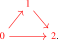
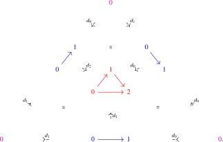
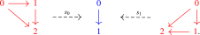

The previous section explained why one should expect \(\infty \)-categories to arise once equality is treated as structure rather than property. We now turn that heuristic picture into working syntax. We will do so in two steps. First we describe the ambient language of \(\infty \)-categories, functors, and higher isomorphisms. Then we explain how the familiar internal notions of objects, morphisms, and commutative triangles can be recovered from this language by testing against a few small 1-categories.
1.2.1 Categories, functors and natural isomorphisms
We start with the basic objects of this language:
- (0)
-
There exist mathematical structures called \(\infty \)-categories, denoted \(C\), \(D\), \(E\), etcetera.
- (1)
-
Given \(\infty \)-categories \(C\) and \(D\), we may speak of functors \(f\colon C \to D\) between them. Every \(\infty \)-category \(C\) has an identity functor \(\id _{C}\colon C \to C\). Given two functors \(f\colon C \to D\) and \(g\colon D \to E\), there is a composite functor \(g \circ f\colon C \to E\).
- (2)
-
Given two functors \(f,f'\colon C \to D\), we may speak of natural isomorphisms \(\alpha \colon f \cong f'\). We may sometimes display natural isomorphisms diagrammatically as follows:
Every functor \(f\) has an identity isomorphism \(\id _f\colon f \cong f\). Every natural isomorphism \(\alpha \) has an inverse isomorphism \(\alpha ^{-1}\colon f' \cong f\). Given two natural isomorphisms \(\alpha \colon f \cong f'\) and \(\beta \colon f' \cong f''\), there is a (vertical) composite isomorphism \(\beta \circ \alpha \colon f \cong f''\).
To avoid cluttering of notation, we will frequently work with natural isomorphisms \(f\cong f'\) that have not been given an explicit name.
- (3)
-
Given two natural isomorphisms \(\alpha ,\alpha '\colon f \cong f'\), we may speak of isomorphisms of natural isomorphisms \(\alpha \cong \alpha '\), also called \(3\)-isomorphisms for short. We may again speak of identity 3-isomorphisms \(\alpha \cong \alpha \), of composite \(3\)-isomorphisms \(\alpha \cong \alpha ''\) and of inverse \(3\)-isomorphisms \(\alpha ' \cong \alpha \).
- (4+)
-
Proceeding in this way, we demand for every natural number \(n\) a notion of an \(n\)-isomorphism between two \((n-1)\)-isomorphisms, and we may speak of identity \(n\)-isomorphisms, of inverse \(n\)-isomorphisms, and of composite \(n\)-isomorphisms.
Following the Fundamental Principle, we should think of a natural isomorphism \(f \cong f'\) between two functors as expressing that \(f\) and \(f'\) are ‘equal’. Similarly two \(n\)-isomorphisms are regarded as ‘equal’ if we are given an \((n+1)\)-isomorphism between them.
Axiom A.2. The composition of functors is unital and associative up to isomorphism: for functors \(f\colon C \to D\), \(g\colon D \to E\) and \(h\colon E \to F\), we have natural isomorphisms1 \[ \lambda _f\colon \id _{D} \circ f \cong f, \qquad \rho _f\colon f \circ \id _{C} \cong f \qquadtext { and } \alpha _{h,g,f}\colon (h \circ g) \circ f \cong h \circ (g \circ f). \] The composition of (higher) isomorphisms is similarly unital and associative up to isomorphism, and for any natural isomorphism \(\alpha \colon f \cong f'\) there are preferred isomorphisms \(\alpha ^{-1} \circ \alpha \cong \id _f\) and \(\alpha \circ \alpha ^{-1} \cong \id _{f'}\).
Since we think of isomorphisms as ‘equalities’, we should make sure that all constructions we use preserve isomorphisms.
Axiom A.3. Composition of functors respects natural isomorphisms: given a natural isomorphism \(\alpha \colon f \cong f'\) of functors \(C \to D\) and a natural isomorphism \(\beta \colon g \cong g'\) of functors \(D \to E\), we obtain a new natural isomorphism \(\beta \ast \alpha \colon g \circ f \cong g' \circ f'\) of functors \(C \to E\), called the horizontal composite.
Remark 1.2.1. To be fully precise one should also write down analogous rules for horizontal composition of \(n\)-isomorphisms for all \(n\), express their compatibility with vertical composition, and impose coherence identities for the preferred associators and unitors of functor composition, such as the triangle and pentagon identities. We will not spell out these details here and instead refer to Reference ? of [Cisinski et al. (2026)]. Throughout the book we silently assume this coherence data is available whenever we rebracket composite functors or natural isomorphisms.
Definition 1.2.2. A commutative square of functors
consists of four functors \(f\), \(g\), \(h\) and \(f'\) together with a specified natural isomorphism \(\alpha \colon h \circ f \cong f' \circ g\). A commutative triangle of functors
consists of three functors \(f\), \(g\) and \(h\) together with a specified natural isomorphism \(\alpha \colon h \cong g \circ f\). We may similarly define a commutative square/triangle of \(n\)-isomorphisms.
Definition 1.2.3. A functor \(f\colon C \to D\) is said to be an equivalence if there exists another functor \(g\colon D \to C\) and natural isomorphisms \(\id _{C} \cong gf\) and \(\id _D \cong fg\). In this case we call \(g\) an inverse to \(f\).
Exercise 1.2.4. Show that a functor \(f\) is an equivalence if and only if it admits both a section (i.e., a \(g\) such that \(\id _D \cong fg\)) and a retraction (i.e. an \(h\) such that \(\id _C \cong hf\)), and that in this case we have \(g \cong h\).
Notation 1.2.5. It follows immediately from the previous exercise that if \(g\) and \(h\) are both inverses to \(f\), then there is an isomorphism \(g \cong h\). When an inverse to \(f\) has been chosen, we denote it by \(f^{-1}\colon D \to C\).
Exercise 1.2.6. Show that if \(f\colon C \to D\) and \(f'\colon D \to E\) are equivalences with inverses \(g\colon D \to C\) and \(g'\colon E \to D\), then also the composite \(f'f\colon C \to E\) is an equivalence with inverse \(gg'\colon E \to C\).
Lemma 1.2.7. Equivalences satisfy the 2-out-of-3 property: given functors \(f\colon C \to D\) and \(g\colon D \to E\), if two of the three functors \(f\), \(g\) and \(gf\) are equivalences, then so is the third.
Proof. If \(g\) and \(f\) are equivalences, then so is \(gf\) by Exercise 1.2.6. If \(f\) and \(gf\) are equivalences, then we may rewrite \(g\) as the composite \(g \cong g \circ \id _{D} \cong g \circ (f \circ f^{-1}) \cong (gf) \circ f^{-1}\), so that \(g\) is the composite of two equivalences and hence itself an equivalence. A similar argument shows that \(f\) is an equivalence whenever \(g\) and \(gf\) are equivalences. □
Exercise 1.2.8. Show that equivalences of \(\infty \)-categories satisfy the 2-out-of-6 property: given functors \(f\colon C \to D\), \(g\colon D \to E\) and \(h\colon E \to F\) such that \(gf\) and \(hg\) are equivalences, also the functors \(f\), \(g\), \(h\) and \(hgf\) are equivalences.
To make contact with familiar mathematics, we also assume that every classical 1-category may be regarded as a special case of an \(\infty \)-category.
Axiom B. Every classical 1-category \(C\) gives rise to an \(\infty \)-category, which we will abusively again denote by \(C\). Given 1-categories \(C\) and \(D\), every 1-functor \(f\colon C \to D\) of 1-categories gives rise to a functor of \(\infty \)-categories, and every \(\infty \)-functor comes from a 1-functor. Every natural isomorphism \(\alpha \colon f \xrightarrow {\cong } f'\) in the classical sense gives rise to a natural isomorphism of functors of \(\infty \)-categories. These assignments preserve composition of functors and natural isomorphisms.
Example 1.2.9. In particular, every partially ordered set \((P, \leq )\) may be regarded as an \(\infty \)-category by taking \(\Hom _{P}(p,q)\) to be a singleton if \(p \leq q\) and empty otherwise.
1.2.2 Objects, morphisms and commutative triangles
So far, this language describes \(\infty \)-categories from the outside, in terms of functors between them. We now explain how to recover the familiar internal notions of objects, morphisms, and commutative triangles from this same setup. Having embedded classical 1-categories into our theory, we can do this by probing an \(\infty \)-category with a few very small ones:
Notation 1.2.10. For \(n \geq 0\), we write \([n]\) for the following linearly ordered set: \[ [n] := \{0 \leq 1 \leq \dots \leq n\}. \] For \(n \geq 1\) and \(0 \leq i \leq n\), we define the face map \(d_i\colon [n-1] \to [n]\) as the unique injective map of posets whose image leaves out \(i\). Similarly we define the degeneracy map \(s_i\colon [n + 1] \to [n]\) as the unique surjective map of posets that hits \(i\) twice.
We denote the associated three \(\infty \)-categories again by \([0]\), \([1]\) and \([2]\). They may be displayed as follows:

The five face maps \(d_0,d_1\colon [0] \to [1]\) and \(d_0,d_1,d_2\colon [1] \to [2]\) and the relations between them may be displayed as follows:

The two degeneracy maps \(s_0,s_1\colon [2] \to [1]\) may be interpreted as the following ‘projections’:

Definition 1.2.11. Let \(C\) be an \(\infty \)-category.
- (1)
-
An object of \(C\) is a functor \(x\colon [0] \to C\);
- (2)
-
A morphism of \(C\) is a functor \(f\colon [1] \to C\). We write \(f(0)\) for its source/domain and \(f(1)\) for its target/codomain, which are defined as the following composites: \[ f(0)\colon [0] \xrightarrow {d_1} [1] \xrightarrow {f} C \qquadtext { and } f(1)\colon [0] \xrightarrow {d_0} [1] \xrightarrow {f} C. \] We will also write \(f\colon x \to y\) to indicate that \(f\) comes with isomorphisms \(x \cong f(0)\) and \(y \cong f(1)\).
- (3)
-
A commutative triangle in \(C\) is a functor \(\sigma \colon [2] \to C\). We will frequently denote commutative triangles by
where \(f = \sigma \circ d_2\), \(g = \sigma \circ d_0\) and \(h = \sigma \circ d_1\). We will often leave commutative triangles unnamed, and only label their three edges.
Warning 1.2.12. While we may speak of objects of \(C\), we may not speak of a set of objects of \(C\)! (We will introduce the anima of objects in Axiom E below.)
Remark 1.2.13. We want to think of a commutative triangle \(\sigma \) as saying that \(h\) is a candidate composite of \(f\) and \(g\). Note that at this stage we do not yet say anything about the existence nor the uniqueness of composites; we get back to this in Section 1.4.2.
Example 1.2.14. Given an object \(x\) of \(C\), we define the identity morphism \(\id _x\colon x \to x\) as the composite \([1] \to [0] \xrightarrow {x} C\). Since the composites \[ [0] \xrightarrow {d_1} [1] \xrightarrow {s_0} [0] \qquadtext { and } [0] \xrightarrow {d_0} [1] \xrightarrow {s_0} [0] \] are naturally isomorphic to the identity functor \(\id _{[0]}\), we see that the source and target of \(\id _x\) are indeed isomorphic to \(x\).
Exercise 1.2.15. Construct for every morphism \(f\colon x \to y\) commutative triangles in \(C\) of the form
Once composition of morphisms is available, this exercise will give the expected relations \(f \cong f \circ \id _x\) and \(f \cong \id _y \circ f\), see Lemma 1.4.8.
Notes
Generated from the authoritative LaTeX source.